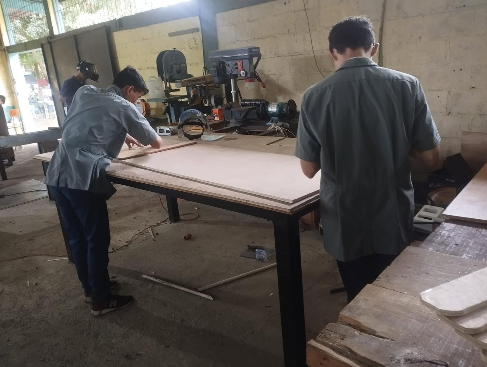
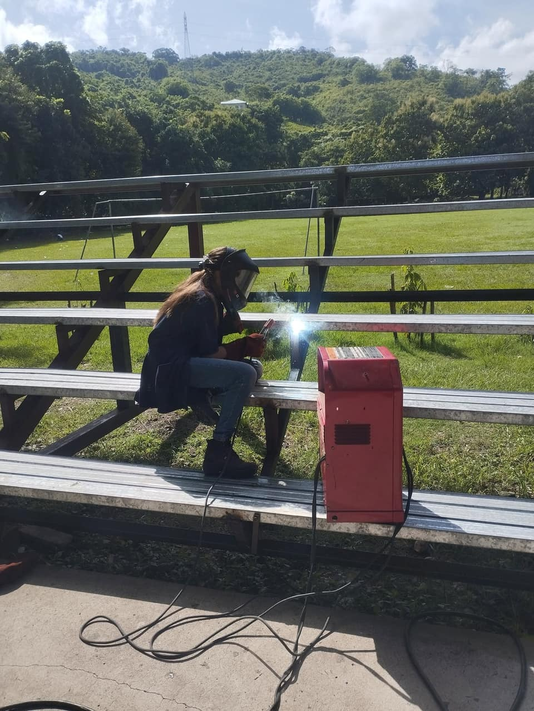
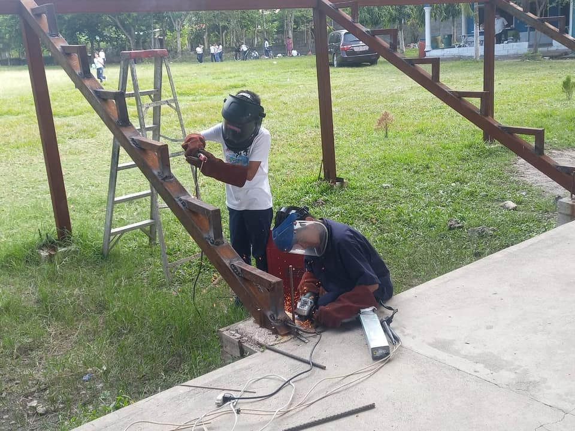
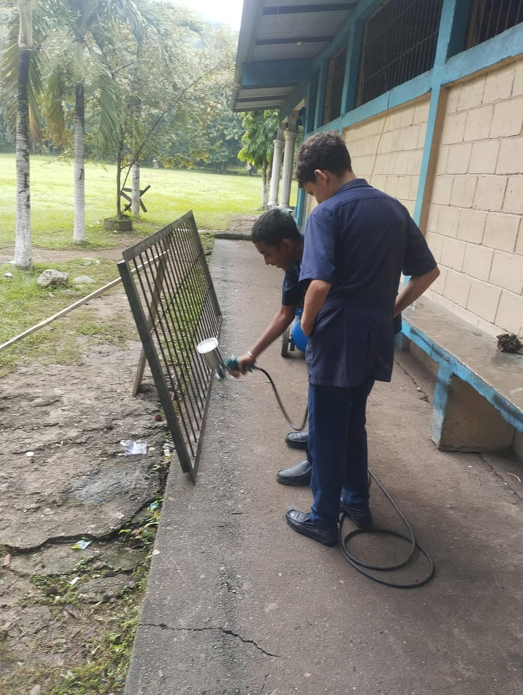
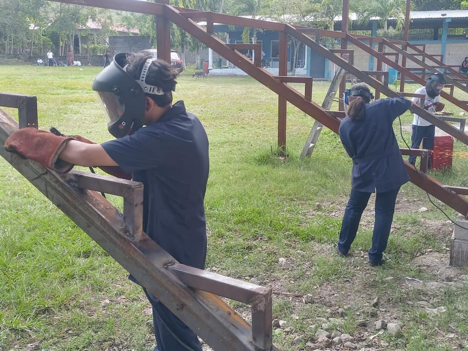

Uso responsable de herramientas
Manejo correcto y seguro del equipo del taller, con supervisión docente en cada práctica.
Aprendizaje práctico relacionado con trabajo, medición y construcción de estructuras metálicas.
Sobre el taller
Esta orientación forma parte del III Ciclo con Orientación Técnica, que el instituto ofrece de séptimo a noveno grado junto a la modalidad básica.
Manejo correcto y seguro del equipo del taller, con supervisión docente en cada práctica.
Toma de medidas, marcado y trazado sobre material antes de cortar o unir las piezas.
Organización por grupos para repartir tareas y completar un trabajo entre varios.
El taller por dentro





Las otras orientaciones
La orientación técnica se elige al matricularse en el III Ciclo. Consulta los requisitos y las fechas del proceso 2027.